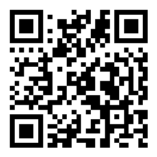
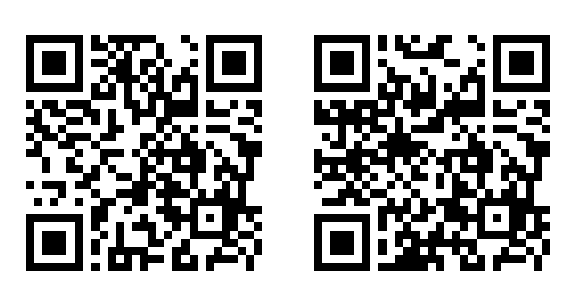

QR2Link 本地测试页
所有二维码均由 test/gen-qr.mjs 本地生成，无网络依赖。
直接用浏览器打开本文件即可测试「截图识别 / 上传 / 粘贴」三入口。
常规样例

normal.png — URL 码：https://example.com/qr2link-test
small.png — 120px 小码（贴近识别下限）
inverted.png — 反色码（白码黑底，验证 attemptBoth）
text-code.png — 非 URL 文本（WiFi 信息，应仅展示 + 复制，无「打开」）
边界样例

two-codes.png — 一图两码：zxing 阶段 1 整图即多码识别，应展示两张卡片；jsQR 仅作应急兜底（zxing 损坏时由阶段 3 象限梯子逐块救回）
huge-with-small.png — 8000×5000 白底 + 右下角 120px 小码（验证三阶段解码的降采样快扫与全分辨率重试；请用「上传」入口测全分辨率，截图只能取到缩放后的显示尺寸）
no-qr.png — 无码图（应明确提示「未识别到二维码」）
右键识别 · 跨域降级测试（实验性）
 跨域远程图片：右键「识别图中二维码」预期走降级路径（fetch 受跨域限制 → 图标 badge ✕）。同源图片请右键上方本地样例图测试。
跨域远程图片：右键「识别图中二维码」预期走降级路径（fetch 受跨域限制 → 图标 badge ✕）。同源图片请右键上方本地样例图测试。
测试要点速查
- 快捷键 Alt+Shift+S：在本页按一次 → 应自动打开第一个识别到的链接
- 粘贴通道：Win+Shift+S 截取本页任意码 → 弹窗内 Ctrl+V / 点「读取剪贴板图片」
- 框选：截图后在预览图拖拽小框套住码 → 「识别所选区域」